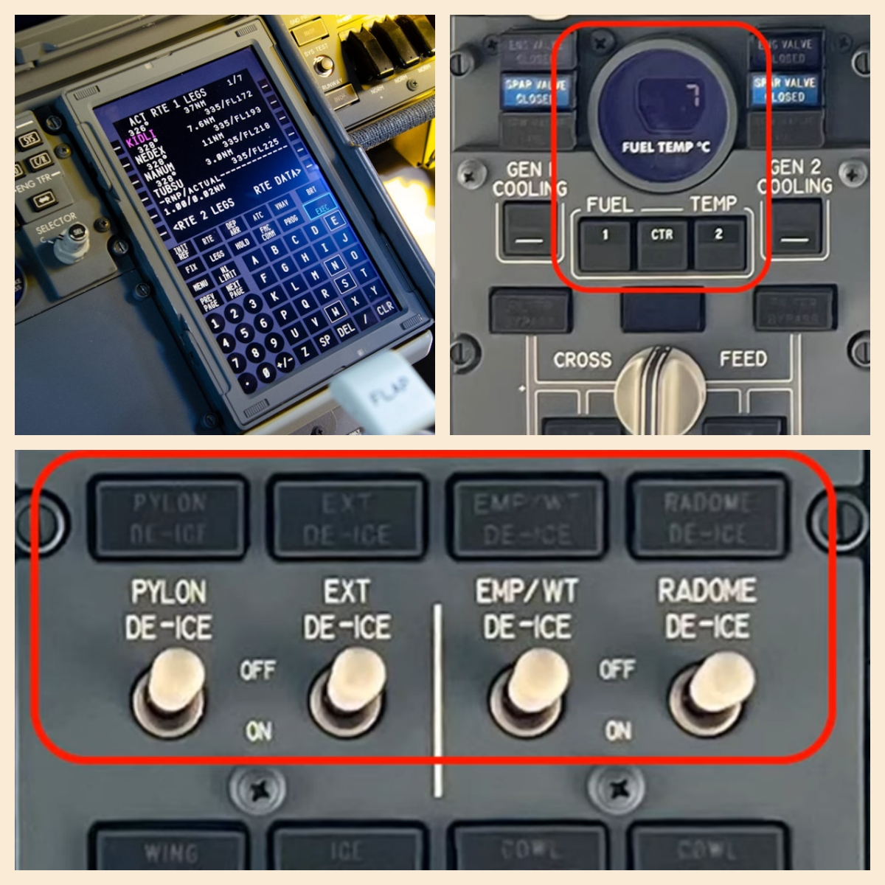
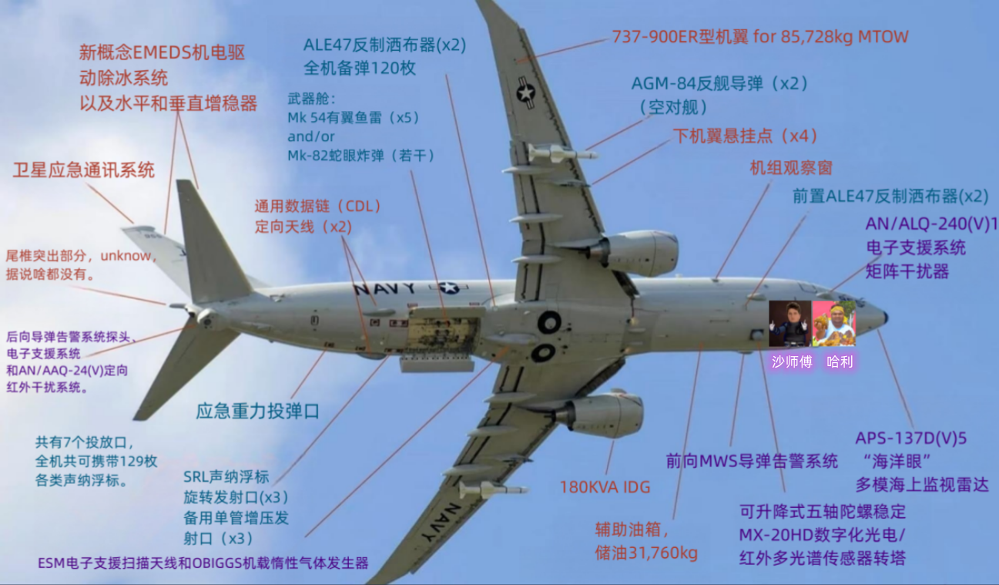

某架空中巡航的B738飞机，突然，遇到外星人了？！
外星人出现在下DU的屏幕中，一个落魄中年人，坚称自己来自外星球。
这个外星人说他自己叫斯旺，是什么休伯利安号的首席工程师。
告诉B738说，他手头正缺资金，所以请B738买他的设备，可以帮我改造升级。
这年头，骗子这么卷的吗？
B738当然不傻，一听要钱的事免谈！
就算信秦始皇，也不能信外星人啊。
不过他说，免费给B738升级几个产品，可以先试试。
没有挡住免费白嫖的诱惑，B738点头答应了，看外星人能整出个什么鬼。
随着提示音的传来，免费装备安装完成。

我勒个去，外星人这么牛的吗？B738惊呆了！
“全液晶CDU，高端大气上档次！”
“燃油温度数字显示屏，再也不用为读数烦恼。另外再送发动机Cooling，一发入魂！”
“四类部件的细节防冰，保护阁下的电缆，传感器，舵面的洁净，满满安全感哟。”
还能有这种操作？随便咔咔几下，驾驶舱内饰上了一个档次，简直逆天了喂！
“不值一提的几个设备，免费送给阁下。”斯旺笑嘻嘻的说道。
可恶，被他装到了！
“确实有点东西啊！”B738夸了一句这个老外，“那……改造的事，请让我再考虑一下吧。”
“好的阁下，我这里的装备配件，物美价廉，超值实用。”斯旺继续说道，“前线战事紧张，先说到这了。阁下记得ACARS联系订购哦。”
说完，下DU对话屏幕中，斯旺的影像拉长消失，扬声器传出滋滋杂音声后，也逐渐安静下来。一切恢复了正常。
只有在ACARS跳出来一条FREE TEXT。
联系方法：“Sent 斯旺 to 休伯利安号”
接下来，便是大量装备详单及价目：
“
AGM-84反舰导弹
Mk 54有翼鱼雷
Mk-82蛇眼炸弹
ANALE47反制洒布器
小型内载侦查机
电子矩阵干扰器，
多光谱传感器转塔
……………………
……………………
”
“简直就很离谱，我还能改成这样？”B738看了几个方案，开始有点相信叫斯旺的外星人了。
同时，机载的EFB上又传来了斯旺发送的，设备改造的推送广告文档。
比较让人心动的，是一款名为“P-8—海神号”的改装方案。
原价2亿5千万美元，现在八折2亿美元，海神波塞冬号抱回家。
再送两位R级驾驶员，分别是曾经驾驶怨灵战机[VS-T]的驾驶员哈利，以及曾科学船[VS-S]的船长沙师傅。
虽然这两货看起来不太正经。但毕竟是赠送的，先凑合用吧。
据说这“海神号”是当下最热门的一款改装方案。

“确实很炫酷，但实在太贵了呀，舍不得啊。”粗略看了改装图解，B738心中喃喃道。
“对了，落地后遇到A321，把我遇到外星人的事情告诉她，她一定会大吃一惊！”
A321是B737最好的朋友，因为同样是中短程窄体机，有着三十几年同病相怜的坚固友谊。
傍晚十分，B738落地在繁忙的某兴机场。
这是一个大型现代化的机场，各个机型的飞机在这里汇集。
它们喜欢聚集在一起，闲聊八卦，交流心情感悟。
“哎~你们知道吗，我刚才在空中，遇到外星人啦~”
B738看到B787，A330，C919还有小妹A321都在，便热情地凑过去打招呼。
“外星人，患者臆想症状持续多久了？”A330问道。
“大概是前段时间，听到B738已经停产了的消息，悲伤过渡产生了一点幻觉吧。”与B738有血亲关系的B787，有些不确定的回答道。
“他们新款的B737MAX也是个小趴菜，是个找不到工作的毕业生，慢就业窝里趴。”C919阴阳怪气地嘲讽。
如今民航的圈子，有这样一条鄙视链：
A380飞机的鄙视A330飞机，他是个弟弟；
A330鄙视同样宽体机的B777，你拿什么与我争？
B777鄙视同机型的B787，难产的巨婴，呸；
ARJ21和C919是时代的宠儿，真正的天命之子；
A321虽为窄体机，但自命优雅，风姿绰约。
而相互之间的看不顺眼，并不妨碍他们，一起鄙视B738....
“请你出去，粗蛮的匹夫，这里是文雅人之间的聚会。”
B738瞬间脸红，恼羞成怒：“嘿，你们这帮孙子！”
有外星人撑腰，B738胆子也壮起来了，敢顶嘴了。
“给老子等着！等老子去充钱变强了，回来把你们一锅端！”
B738叫嚣着骂道，似乎想把这些年受的侮辱怨气，全都怼回去。
“鄙俗粗蛮的土包子，一边玩去，滚远些。”众机型满脸嫌弃，毫不在意的回答。
AN/ALE-47 CMDS 是一种电子战 (Electronic Warfare) 自我保护系统，在任何环境下能提高战斗机组人员面对地对空与空对空导弹威胁的存活率。它可轻松与众多互补系统整合，这些系统包括导弹预警系统 (MWS)、机载无线射频干扰系统以及雷达预警接收器(RWR)。
ANALE47反制洒布器 2022年6月15日，美国白宫对外宣布，向乌克兰提供价值10亿美元的装备，包括岸基“鱼叉”反舰导弹系统等。 2023年4月17日，美国媒体传出美国将向台湾出售400枚岸基“鱼叉”反舰导弹的消息，让部分岛内媒体如同吃到茶叶蛋一样兴奋，甚至宣称“它们可以摧毁一半的解放军水面舰队”。 AGM-84反舰导弹 Electronic Support Measures (ESM) 诺斯罗普·格鲁曼公司为美国海军P-8A波塞冬飞机的电子支持措施（ESM）系统已被正式指定为AN/ALQ-240(V)1。指定命名是一个重要的鉴别器，表明该系统是美国库存中现有系统的。 据该公司称，AN/ALQ-240(V)1电子支持措施系统“将为复杂的海上战场的作战能力提供显著的提升”。ALQ-240(V)1的自适应调整、精确的寻向和地理定位能力将使P-8A机组人员能够探测和识别对飞机和海军舰艇构成的雷达和其他电子威胁。” 到目前为止，波音公司及其团队，包括诺斯罗普·格鲁曼公司在内的团队，已经向美国海军交付了三架生产的P-8As。初始作战能力计划在2013年实现。 诺斯罗普·格鲁曼公司监视系统业务部门的副总裁保罗·卡拉福斯评论道：“授予我们的P-8A ESM系统的正式命名法对诺斯罗普·格鲁曼公司和P-8A项目来说意义重大，并支持向生产的过渡。”该系统将有助于美国海军拥有强大的海上监视能力。” 诺斯罗普·格鲁曼公司还提供了P-8A平台的早期预警自我保护系统，通常被称为EWSP，以及嵌入式全球定位系统/惯性导航系统。 AN/ALQ-240(V)1电子支援系统矩阵干扰器 因为全天候反潜作业中需要频繁改变飞行高度，斜削式翼梢垂尾和平尾的除冰能力至关重要，P-8A在这三个部位安装了一套Cox and Company公司设计的新概念EMEDS机电驱动除冰系统，由电驱动器带动铝制或钢制气动面前缘高频振动，通过微小变形将超过1.5毫米厚的冰层从机体上震落，在此之前只有比奇公司的豪华商务机和海军全球鹰无人机上采用过这一技术。 APS-137D（V）5雷达,是用于反舰和反潜的多模合成孔径雷达和逆合成孔径雷达系统。它可利用逆合成孔径雷达进行远程水面搜索和目标跟踪、精确定位、舰艇成像和识别：利用合成孔径雷达进行陆地监视、目标获取和地面映像等，分辨率可达0.92米。具备更加优良的对目标探测和边扫描边跟踪性能，并能同载机上的任务控制和显示系统联机 APS-137D(V)5“海洋眼”多模海上监视雷达 在前起落架舱后面安装了一部五轴陀螺稳定MX-20HD数字化光电/红外多光谱传感器转塔，最多可以配置7具光学传感器，包括针对高湿度、低能见度海洋环境优化的中波段前视红外成像仪、可随动于雷达进行广域搜索的1080P高清电视摄像机、影像增强器、激光测距仪、激光照射器等。转塔内置有惯性测量组件，配合飞机上的惯性导航系统，无需开启激光测距仪就能提供精确的目标位置信息。MX-20系列广泛装备在美制固定翼飞机、直升机和无人机上，而P-8A采用了可升降式，不用时可以缩回机体内，既降低了飞行阻力又能更好地保护传感器。 AGM-84D